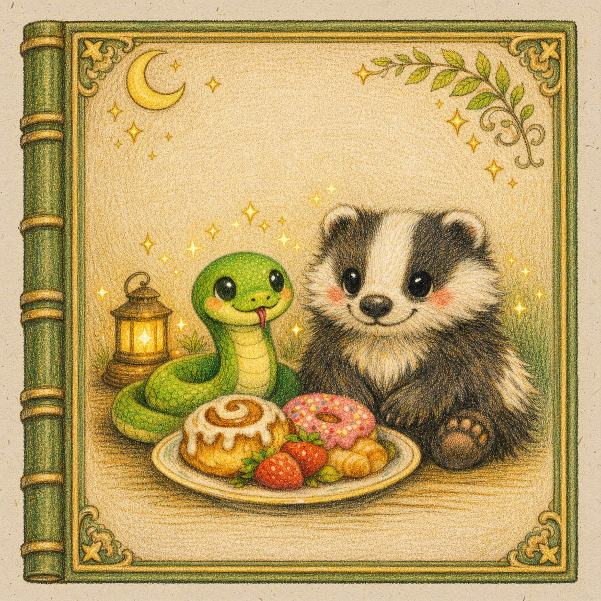

Страница 1 из 10
Текст вопроса

Дорогие пуффендуйцы! Вы постоянно пугаете нас бухгалтерией, бюрократическими ивентами и финансовой грамотностью. Судя по всему, у вас водятся деньги, но знает ли кто-нибудь, где вы их храните? Мы попытались это выяснить! Итак, показывайте ваши кошельки!